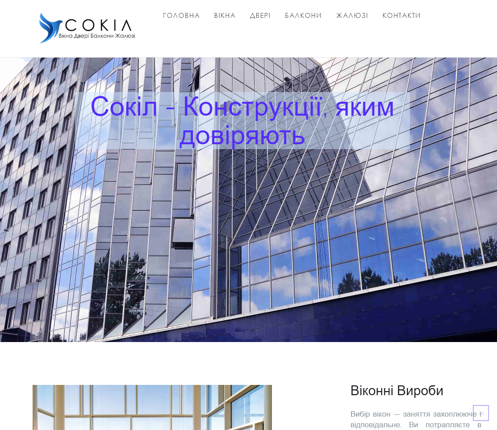
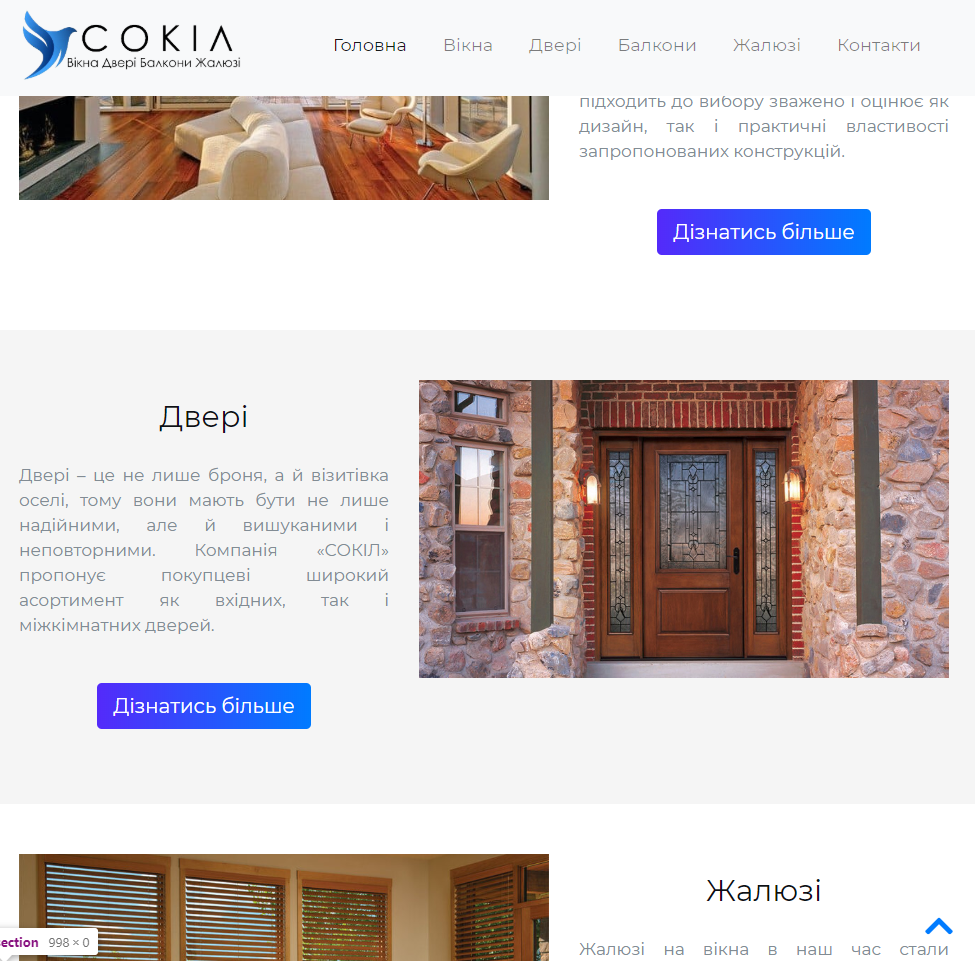

Іван Резніченко
Початковий Front-End розробник
cossacki1vn@gmail.com
vip_man521
+380638157152
Україна, м. Вінниця, 21008
Освіта
Середня освіта
Школа - №521 (2002 - 2009 р.н.). Росія, Санкт-Петербург
Школа - Физико-Математическая гимназия № 17 (2009 - 2013 р.н.). Україна, Вінниця
Вища освіта
Університет - Вінницький Національний Технічний Університет. ІТКІ - Комп’ютерна інженерія (Магістр) (2013 - 2019 р.н.). Україна, Вінниця
Курси
Оператор комп’ютерного набору (2015 - 2016 р.н.)
Beetroot Academy - Front-End Розробка (2020 - р.н.)
Мови
Українська
- Рідна, можу проходити співбесіду на цій мові.
Російська
- Рідна, можу проходити співбесіду на цій мові.
Англійська
- Середній рівень.
Навики у Front-End
HTML
- Досвід меньше 1 року. Початковий рівень володіння, використовую в даний час.
CSS
- Досвід меньше 1 року. Початковий рівень володіння, використовую в даний час.
JavaScript
- Досвід меньше 1 року. Початковий рівень володіння, використовую в даний час.
Bootstrap v4
- Досвід меньше 1 року. Початковий рівень володіння, використовую в даний час.
Sass
- Досвід меньше 1 року. Початковий рівень володіння, використовую в даний час.
JQuery
- Досвід меньше 1 року. Початковий рівень володіння, використовую в даний час.
Приклади робіт

Робота виконана на бескоштовній темі WordPress

Робота виконана на Bootstrap v4